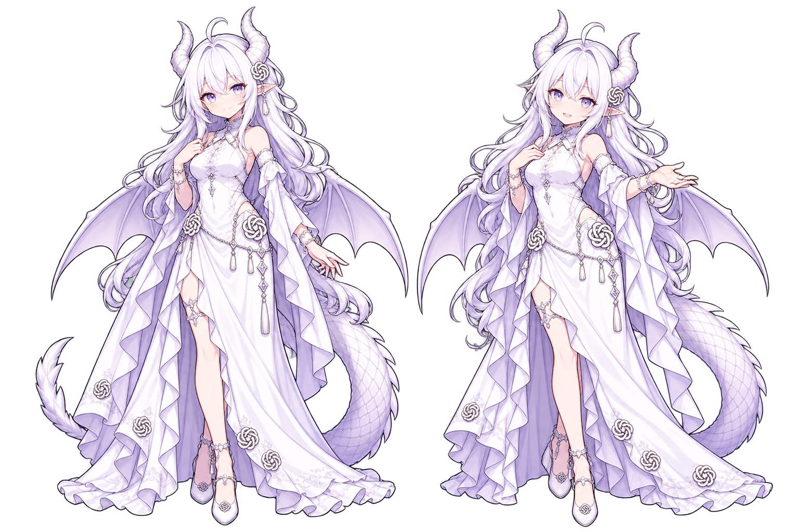

GPT酱 v2 · 七状态关键姿势
已认可的待机／等待作为角色基线。本页集中比较其余七种动作的脸、比例、服装、翼尾与表演；当前均为关键姿势，不代表完整动画、正式透明帧或实机效果已验收。
展开已认可的待机／等待基线

本轮采用单姿势白底审稿图。深色按钮只改变图外衬底，不是透明边缘验收。缩小预览采用整张图片等比适配，不代表已经制作原生帧。审看顺序：角色一致性 → 状态表达 → 手部、翼尾与服装结构。
向右移动
running-right朝画面右侧迈步，检查运动方向与整体平衡。
向左移动
running-left朝画面左侧迈步，重点比较头部比例与右行是否一致。
挥手
waving小幅挥手与克制微笑，保留从容的亲和感。
跳跃／完成庆祝
jumping跳跃最高点；检查腾空姿态、中性表情与微张口。
失败
failed轻微停顿与反思，保持镇定，不以哭泣表现失败。
工作中
running双手向前的小幅处理动作，读作工作进行中。
检查中
review托下巴与评估目光，读作检查和判断。
原角色形象：ZipZipPipe。本批为本项目 AI 辅助二创，非原作者确认设定。记录见 制作说明、本批完整提示词。首轮探索图保留在 drafts/，未选作本页审稿图。